9
Interfacing with SPI Devices
The Serial Peripheral Interface (SPI) bus is yet another serial bus standard that you can use to connect peripherals to your Arduino. It is fast but uses four pins compared with the two that I2C uses. SPI is not actually a true bus, as the fourth pin is a Save Select (SS) pin. One Arduino pin must be used for SS for each peripheral on the bus. This setup effectively addresses the right peripheral on the bus by turning all the other peripherals off.
A wide range of SPI devices are available, including many of the same type of devices available for I2C. It is not uncommon for peripherals to have both I2C and SPI interfaces.

Bit Manipulation
SPI interfacing tends to involve a lot of bit manipulation to get data on and off the bus. The first example project (using an MCP3008 ADC IC), in particular, requires a good understanding of how to shuffle bits along and mask the ones you don’t want in order to extract an integer value for the analog reading. For this reason, before I go any further into the workings of SPI, I’ll make a diversion to explain, in more detail, bit manipulation.
Binary and Hex
You first met the concept of bits and bytes back in Chapter 4 (see Figure 4-2). When you are manipulating bits in a byte or word (two bytes), you can use their decimal values, but converting between binary and decimal is not that easy to do in your head. For this reason, values are often expressed as binary constants in Arduino C, which you can do using the special syntax shown in this example:
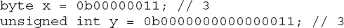
In the first line, a byte with the decimal value of 3 (2 + 1) is defined. The leading zeros are optional, but providing them serves as a handy reminder that 8 bits are available.
The second example uses an int to hold 16 bits. The qualifier unsigned is placed in front of int to indicate that the variable should only be used to represent positive numbers. This qualifier only really matters if you are using +, –, *, and so on, with the variable, which you should not do if you are using it for bit manipulation. But including the word unsigned is good practice.
When you get to 16 bits, the binary representation starts to look a bit long and unwieldy. For this reason, people often use a notation called hexadecimal, or more commonly just hex, to represent longer binary numbers.
Hex is number base 16, which means you have the usual digits 0 to 9 but also the letters A to F that represent the decimal values 10 to 15. That way, each four bits of a number can be represented in a single digit. Table 9-1 shows the decimal, binary, and hexadecimal representations of the numbers 0 to 15 (decimal).
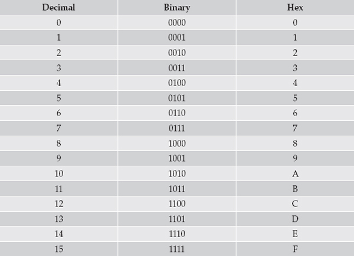
Table 9-1 Binary and Hexadecimal Numbers
Hex constants have a special notation similar to that of binary:
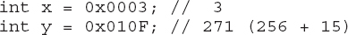
You’ll see this notation used outside of C, in documentation, to make it clear that the number is hex and not decimal.
Masking Bits
A common problem when you receive data from a peripheral using any kind of connection is that the data arrives packed into bytes and not all of the bytes are needed. Peripheral designers often fit as much information as they can into as few bits as possible, speeding up communication, but often at the expense of making the devices more difficult to program.
The process of “masking” bits allows you to disregard some of the data in a byte or larger data structure. Figure 9-1 shows how a byte containing multiple data can be masked to produce a number from the least significant three bits of the byte.
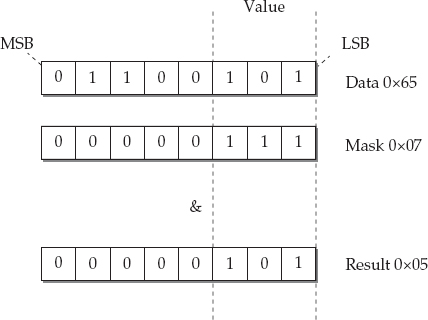
Figure 9-1 Masking bits
You’ll come across the phrases “least significant” and “most significant” to describe binary numbers. In binary written in the normal mathematical way, the most significant bit is the leftmost bit and the least significant bit is the rightmost. After all, the rightmost is only worth 1 or 0. You’ll also see the terms most significant bit (MSB) and least significant bit (LSB). The least significant bit is also sometimes referred to as bit 0, bit 1 being the next most significant bit and so on.
In the example shown in Figure 9-1, the data byte has some values at the most significant end that we are not interested in and only three bits at the least significant end that we want to extract as a number. You do this by “anding” the data with a mask value that has the three bits you’re interested in set to 1. Then you “and” together two bytes; each of the bits is, in turn, “anded” with each other to build a result. The result of “anding” two bits is only 1, if both the bits are 1.
Here’s how the example looks in Arduino C using the & operator. Note that bitwise and uses the single & character rather than the && used in logical and.
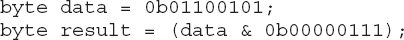
At the end, the variable “result” contains the value 5 (decimal).
Shifting Bits
Another thing you will find with received data is that having masked the bits you want, those bits are not all at the least significant end of the byte.
For example, if the value of interest in the data used in Figure 9-1 was between bits 5 and 3 (see Figure 9-2), you need to first mask the bits of interest, as you did in the previous example, and then sift the bits three places to the right.
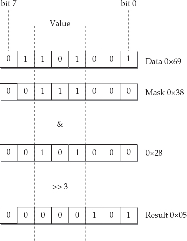
Figure 9-2 Masking and shifting bits
You use the C operator >> to shift bits to the right and the number following the >> is the number of bit positions to shift the bits. This may result in some bits being shifted off the end of the byte. Here’s this example written in C:
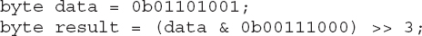
What if you need to take two 8-bit bytes and assemble them into a single 16-bit int? You can accomplish this by first shifting the bits of one byte (the most significant byte) to one end of the int and then adding in the second byte. Figure 9-3 illustrates this process.
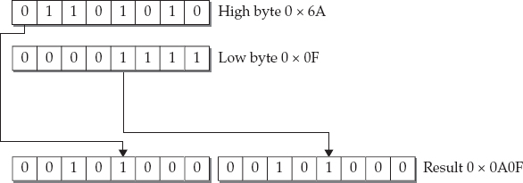
Figure 9-3 Combining two bytes into an int
In Arduino C, you first place the highByte into the int result variable and then shift it left eight spaces before adding the lowByte:
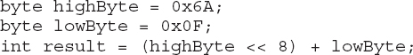
SPI Hardware
Figure 9-4 shows a typical configuration for an Arduino with two slave devices.
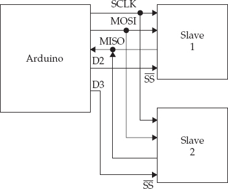
Figure 9-4 Arduino and two slave SPI devices
On the Arduino, the System Clock (SCLK), Master Out Slave In (MOSI), and Master In Slave Out (MISO) are linked to the Arduino pins of the same name, which map to pins D13, D11, and D12 on an Arduino Uno. Table 9-2 lists the pin assignments on the most common Arduino boards.
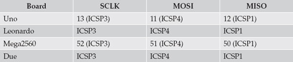
Table 9-2 SPI Connections on Arduino Boards
The Slave select pins can be any pins on the Arduino. They are used to enable a particular slave just before data transmission and then disable it after communication is complete.
No pull-up resistors are required on any of the lines.
Because some Arduino boards, including the Leonardo, only have SPI connectors that are accessible from the ICSP header pins, shields that use SPI often have a socket header that meets the ICSP male header. Figure 9-5 shows the ICSP header with the ICSP headers labeled.
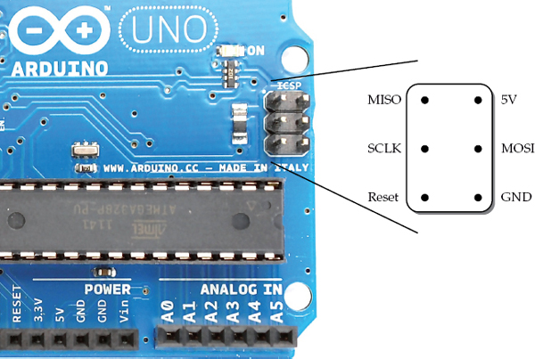
Figure 9-5 Arduino Uno and ICSP connections
Note that the Arduino Uno has a second ICSP header near the reset button. This is for programming the USB interface.
The SPI Protocol
The SPI protocol is, at first sight, confusing because data is transmitted and received at the same time by both the master and the currently selected slave. At the same time that the master (Arduino) sends a bit from its MOSI pin to the corresponding MOSI pin on the slave another bit is being sent back from the Slave’s MISO pin to the Arduino’s MISO pin.
Typically, the Arduino sends a byte’s worth of bits and then sends eight zeros while, at the same time, reading the results coming back from the slave. Because the master sets the transmission frequency, make sure the rate is not too fast for the slave device.
The SPI Library
The SPI library is included with Arduino IDE, so you do not need to install anything to use it. It only supports Arduino-as-master scenarios. The library also only directly supports transmission of whole bytes. For most peripherals, this setup is just fine; however, some devices expect 12-bit messages, which can result in some complicated bit manipulation as you’ll see in the example in the next section of this chapter.
The first step is, as usual, to include the SPI library:
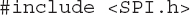
Next, you need to start SPI by issuing the SPI.begin command in your “startup” function.
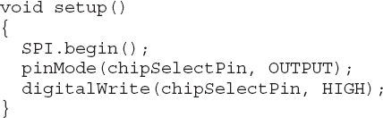
Unless you are using a Due, you also need to set up digital outputs for each of the SS pins to the slave devices. These outputs can be any Arduino pins. Having set them to be outputs, you need to set them to HIGH immediately because the slave select logic is inverted, so a LOW means the slave is selected.
The Due has extended the SPI library so you can specify one pin to be used for slave selecting, and then the library automatically sets this LOW before transmission and then HIGH after transmission is complete. You can use this feature simply by specifying the pin to use as the only argument to SPI.begin. The disadvantage of doing it this way, however, is that it breaks compatibility with other Arduino boards. In the examples in this chapter, all the slave select pins are controlled manually and are, therefore, suitable for all Arduino boards.
A number of utility functions allow you to configure the SPI connection. However, the defaults will normally work, so you only need to change these settings if the datasheet for the slave device leads you to believe they might need changing. These functions are summarized in Table 9-3.
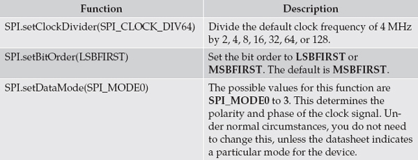
Table 9-3 Configuration Functions
The combined data send and receive happens in the transfer function. This function transfers a byte of data and returns the byte of data that it received during the send operation.
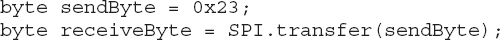
Because a conversation with a peripheral usually takes the form of the master requesting something from the slave and the slave responding, you’ll often have two transfers in order: one to request the data and the other (a send, probably of 0s) to pull back the data from the peripheral. You’ll see this in the next example.
SPI Example
This example interfaces a MCP3008 eight-channel ADC IC to an Arduino, adding another eight 10-bit analog inputs to your Arduino. The chip is low cost and easy to wire.
Figure 9-6 shows the chip wired to the Arduino using breadboard and jumper wires. The variable resistor (pot) is used to vary the voltage to analog input 0 between 0 and 5V.
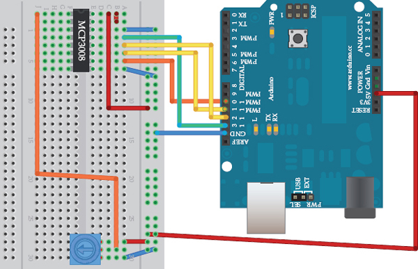
Figure 9-6 Wiring diagram for SPI example
Following is the sketch for this example:
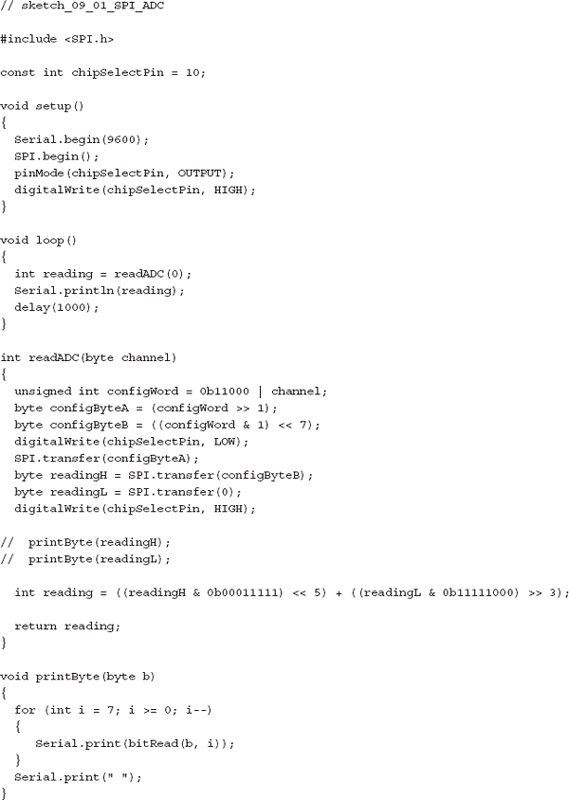
The function printByte was just used during development to display the binary data. Although Serial.print can display binary values, it does not include leading zeros, which makes interpreting the data difficult, whereas the printByte function always prints all 8 bits.
To see the data coming from the MCP3008, you can remove the // before the two calls to printByte and the binary data you are interested in will be displayed.
All the interesting code happens in the readADC function, which takes the ADC channel (0 to 7) as its parameter. The first thing you need to do is to use some bit manipulation to create the configuration byte that specifies the kind of analog conversion you want to perform and also the channel you want to use.
The chip is capable of two ADC operation modes. One mode is to compare two analog channels, and the second mode (which this example uses) returns the single-ended reading from the channel specified, just like an Arduino analog input. The datasheet for the MCP3008 (http://ww1.microchip.com/downloads/en/DeviceDoc/21295d.pdf) specifies that the configuration command needs to set four bits: the first bit needs to be 1 for single-ended mode; the next three bits determine the channel (0 to 7) to use.
The MCP3008 is not designed for the byte-at-a-time way in which the SPI library works. In order for the MCP3008 to recognize these 4 bits, we have to split them across 2 bytes. Here’s the code for doing this:
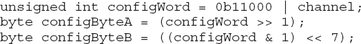
The first byte of the configuration message contains two 1s, the first of which may not be needed and the second 1 corresponding to the mode bit (single-ended). The other 2 bits in this byte are the most significant 2 bits of the analog channel number. The remaining bit of this number is in the second configuration byte as its most significant bit.
The next line sets the SS line for the chip LOW to enable it.
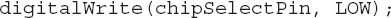
After that, the first configuration byte is sent:
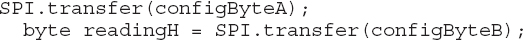
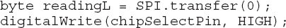
The analog data will not start arriving until the second configuration byte is sent. The 10 bits of data from the ADC are split across 2 bytes, so to flush out the remaining data, a call is made to “transfer” sending a byte load of zeros.
The SS output is now set HIGH as the communication is now complete.
Finally, the actual 10-bit analog reading value is calculated using the following line:
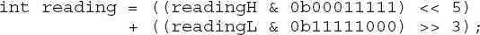
Each of the 2 bytes has 5 of the 10 bytes of data in it. The first byte contains these bits in its least significant 5 bits. All the bits apart from those 5 are masked out and shifted five positions up in the 16-bit int. The lower byte contains the remainder of the reading in its most significant five digits. These must be masked and shifted right by three bit positions before they can also be added into the 16-bit int.
To test this, open the Serial Monitor. You should see some data appear. If you sweep the slider of the pot clockwise from 0 to 5V, you should see something similar to what’s shown in Figure 9-7. The first two binary numbers are the 2 bytes from the MCP3008 and the final decimal number is the analog reading between 0 and 1023.
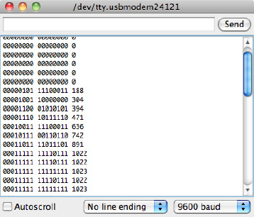
Figure 9-7 Viewing the messages in binary
Summary
Interfacing with SPI when no library is available is by no means easy. You will sometimes need to perform a little trial and error to get things going. As with any type of debugging, always start by gathering evidence and examining the data that you are receiving. You will slowly get a picture of what is happening and then be able to tailor your code to produce the desired results.
Text chapter examines the final interface standard supported by the Arduino, that of TTL Serial. This standard is a point-to-point interface rather than a bus, but nonetheless a much-used and handy mechanism for sending and receiving data.